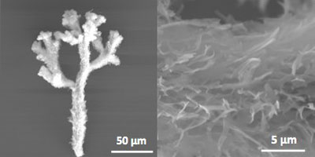
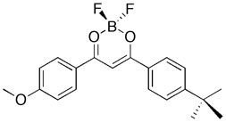

|  |
| Chromogenic materials > Scratch the Surface Ink > About BF2AVB |
|

This compound is synthesized from avobenzone (AVB), a simple, commercially available sunscreen ingredient. Avobenzone protects the skin by absorbing Ultraviolet A (UVA) rays, that is, long wavelength or black light (i.e. 315-400 nm). Modification with boron (B) and two fluoride groups (F) in a single-step reaction results in a dye that is fluorescent both in solution and in the solid state. Fluorescent compounds are substances that emit light. For BF2AVB to fluoresce, it must first be excited by UV or black light. It does not emit light without energy input first.
Emission color depends upon the solid form. The morphology of solid-state BF2AVB determines the fluorescence color. Prisms emit green, needles cyan, and dendritic coral-like structures blue. Beautiful coral-like structures were formed by rapid evaporation of dye solutions from a cotton swab tip. Emission color changes when mechanical force is applied. The technical term for this property is piezochromic or mechanochromic luminescence (ML). When crystals of BF2AVB are crushed or the solid is smeared on a surface, the smeared regions change fluorescence color. More specifically, the emission shifts to longer wavelength, lower energy. Mechanochromic luminescence is a rare phenomenon known for very few classes of materials and most ML compounds are much more complex and difficult to make than BF2AVB. Even more rare and perhaps unprecedented is that scratched or smeared regions of BF2AVB can recover spontaneously at room temperature or more rapidly with heating and then it is possible to write on the surface again. This writing-fading-writing process was first demonstrated for a thin film of BF2AVB on weighing paper using a cotton swab tip to write “light” in English and Chinese. We have since discovered that other dyes in this class also display ML. We refer to these materials as Scratch the Surface Inks . It is fascinating and unusual to have pigments with several colors and a time associated with them! The colors, duration and reproducibility of mechanochromic luminescence effects are substrate dependent. We have experimented with new material substrates commonly found in the architecture studio and have discovered some fascinating effects, particularly on plastic substrates such as Yupo (polypropylene) and VYCO (vinyl) drafting table covering. Some results of our experimentation are documented in this exhibit.
BF2AVB and most other materials and substances in the world around us have not been tested for toxicity. -Cassandra Fraser
Reference: Zhang, G.; Lu, J.; Sabat, M.; Fraser C. L. "Polymorphism and Reversible Mechanochromic Luminescence for Solid-State Difluoroboron Avobenzone" J. Am. Chem. Soc. 2010, 132, 2160-2162.
|
|